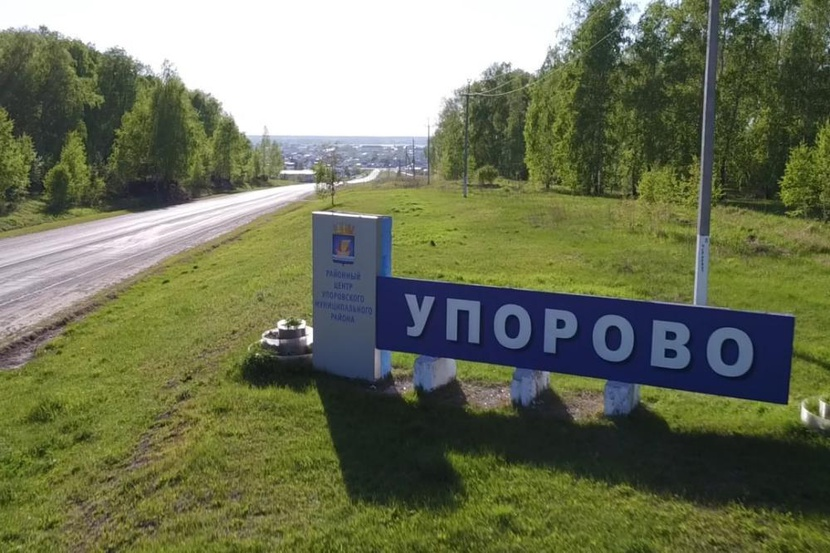

Живая история · интерактивный буклетЧто посмотреть в Упорово: карта и подсказки

Медиапроект «Живая история»
Что посмотреть в Упорово: карта и подсказки
Интерактивный буклет о достопримечательностях села Упорово: памятниках, картофельной славе села и Доме-музее старообрядчества.
Карта достопримечательностей
Фотографии
Видеоподкасты
История родного края
О проекте «Живая история»
Медиапроект по истории Упоровского края «Живая история» — это серия видеоподкастов о достопримечательностях села Упорово. Ведь в Упорово у нас очень много различных достопримечательностей.
В ходе реализации проекта ребята изучали историю знаковых мест, памятников и самого села Упорово, а также раскрывали творческие способности в создании медиаконтента.
Итогом проекта стало создание интерактивного буклета с картой достопримечательностей на основе материалов видеосъёмок.
«Достопримечательности нашего села — это не просто здания, памятники или природные уголки. Это страницы большой истории, которые ждут, чтобы их прочли. В каждом из этих мест живёт память о прошлом, отражается характер наших земляков и сохраняется связь поколений. Знать эти места — значит лучше понимать себя и свой край. Пусть интерес к родному селу не угасает, а растёт с каждым годом, передаваясь от старших к младшим и объединяя всех, кто здесь живёт».
Упорово — село с богатой историей, памятными местами и культурными традициями.
Упорово: село с историей
Въезд в село Упорово.
Упорово — это село, в котором бережно сохраняют память о прошлом и с уважением относятся к труду, традициям и истории родного края. Здесь соседствуют памятные места, объекты современной жизни и культурные пространства, рассказывающие о самобытности села.
Для знакомства с Упорово стоит обратить внимание на три важные группы достопримечательностей:
Памятники — страницы военной и общественной истории;
КРиММ — символ трудовой славы и картофельной известности села;
Дом-музей старообрядчества — хранитель народных традиций и уклада жизни.
Память
Труд
Традиции
Интерактивная карта достопримечательностей
Нажмите на метку, чтобы перейти к описанию объекта.
Условная схема
Карта выполнена в виде интерактивной схемы для навигации по буклету.
Памятники Упорово
Памятные места села Упорово помогают сохранить историческую память и уважение к прошлому. Здесь находятся мемориалы, посвящённые воинам-землякам, участникам Великой Отечественной войны, а также памятник борцам за советскую власть. Эти объекты напоминают жителям и гостям села о героизме, стойкости и мужестве людей, чьи судьбы связаны с историей родного края.
Памятный знак «Вечная память воинам-землякам».
Мемориал Славы павшим воинам Великой Отечественной войны 1941–1945 гг.
Памятник борцам за советскую власть.
КРиММ — картофельная слава Упорово
КРиММ — одно из узнаваемых мест Упорово.
КРиММ — это важная часть современной жизни села Упорово и один из его узнаваемых символов. С темой картофеля связано представление о трудолюбии жителей, развитии сельского хозяйства и достижениях местного производства.
Раздел «Картофельная слава Упорово» помогает увидеть, как труд и хозяйственная деятельность становятся частью образа родного села и его известности далеко за пределами района.
Сельское хозяйство
Трудовая слава
Визитная карточка села
Дом-музей старообрядчества
Дом-музей старообрядчества — хранитель традиций и памяти.
Дом-музей старообрядчества знакомит посетителей с укладом жизни, традициями и духовной культурой старообрядцев. Это место помогает почувствовать связь времён и лучше понять, каким образом сохранялись обычаи, ремёсла и семейные ценности.
Знакомство с Домом-музеем старообрядчества раскрывает ещё одну важную сторону истории Упорово — уважение к наследию и бережное отношение к культурной памяти.
Традиции
Культурное наследие
Связь поколений
Заключение
Упорово — это село, в котором история живёт рядом с современностью. Памятники, трудовые достижения и культурные традиции создают особый образ родного края и помогают сохранить связь поколений.
Достопримечательности нашего села — это страницы большой истории, которые важно знать, беречь и передавать дальше. Интерес к родному селу начинается с внимательного взгляда на места, где хранится память, труд и традиции.